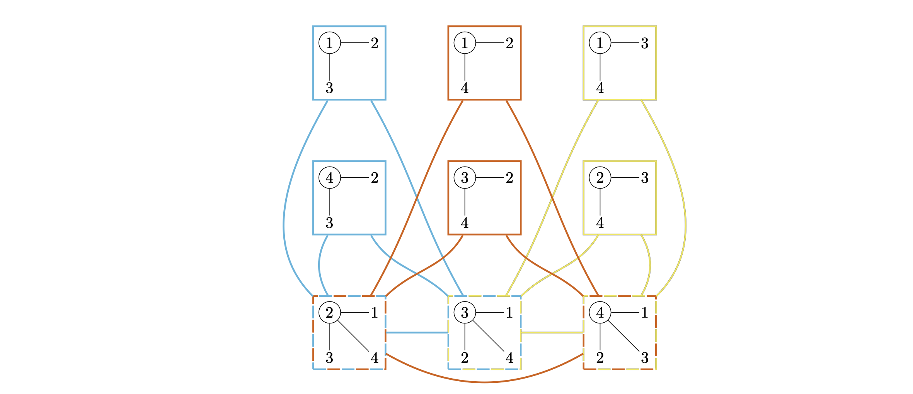
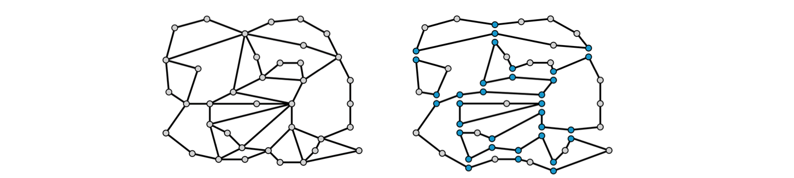
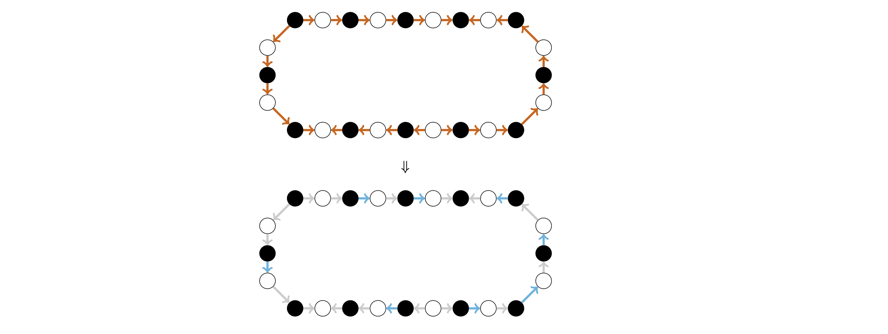

参考：https://disco.ethz.ch/courses/podc/#peleg
# Chapter 1: Tree Coloring Problem
考虑这样一个问题：给定一棵树，要求对树进行染色，让相邻的结点（父子之间）颜色不同。
很显然，2 种颜色就已经足够给一棵树染色，只要不同层之间交替使用颜色即可，但是这不可避免地要遍历树。
我们考虑 同步分布式计算 (synchronous) 的模型，即一轮一轮地进行通讯和计算：每一轮每个节点都可以给他的 neighbours 发消息（也可以从 neighbours 接收消息），然后进行本地计算。
即使我们给每个 vertex 对应分布式系统中的一个 node，那么它的颜色也需要等待从根节点一次次传递下来确定。换句话说，这个过程需要 的通讯轮数 (round complexity)，其中 是树的高度。
注意，这里我们假设了分布式系统 node 之间的连接关系至少是和树的结构是一样的，即每个 node 都可以给自己的父子结点收发信息。
这样的算法效率不高，因为那些叶子结点在前几轮通讯时都在发呆，只有等父亲结点在某一轮确定颜色后，才会在下一轮确定自己的颜色。
我们再给出一个 distributed 算法。
- 每个结点都对应一个分布式系统中的一个节点；
- 初始时，每个结点的颜色就是它的编号，这样的话一共使用了 种颜色；
- 重复如下过程，直到所有结点的颜色都在 中：
- 每个结点都把它的颜色编号 发给所有的孩子，并从父亲结点那里接收颜色编号；
- 把 表示为二进制形式，令 为 rightmost bit where and differ。每个结点把自己的颜色更新为。
举个例子，譬如，，那么，更新后。
这个算法第一眼看上去极度诡异，它是从一个 trivial 的正确染色方法开始（即所有 vertex 颜色都不一样），然后一步步更新颜色，直到最后用少于 6 种颜色。它的 round complexity 是惊人的，其中 函数是如下定义的增长极度缓慢的函数：
换句话说， 需要用多少个 函数才能把 缩小到不超过 2。可以注意到，，即，这已经是宇宙中所有原子数量。
下面我们证明这个算法的正确性和 round complexity。
首先是正确性，我们证明每次更新后，每个结点和它父亲结点的颜色仍不一样。
如果结点 和它父亲结点 的颜色在第 位不同，而 又和它的父亲颜色在第 位不同，那么有 2 种情况：
- ，那么更新后的颜色 一定不等于。
- ，那么我们知道，因此更新后的颜色仍然不同。
接下来是 round complexity，很显然每次都会使得最大颜色值缩减一个 级别，因此最多 轮后，所有颜色都在 中。
为什么颜色最大是 5？可以验证，如果，那么更新后 仍然是 5。但如果 或 7，那么它仍然是可以更新缩小的。
我们仍然忽视了很多东西，譬如最后一行：怎么才能让所有 node 都知道，所有 node 的颜色都在 中呢？这个问题的回答出奇地复杂。我们可能会固定一个轮数让每个 node 提前都知道，这样的话实际上每个 node 都需要知道 来计算（而不是把轮数在某个结点上计算好后，通讯发给大家），这并不是很有效的办法。
接下来，我们优化到只用 3 个颜色染色。在前述算法的基础上，我们可以增加 6 轮通讯：
- for ，执行下面过程
- 用一轮通讯，使得所有结点的颜色都更新为它父结点的颜色。特别地，root 从 中找一个新的、不同于之前 root 颜色的颜色。
- 如果更新后的颜色等于，用一轮通讯得知它父亲结点的颜色，并从 中找到一个合法颜色（即不同于它父子结点颜色的颜色，它孩子结点的颜色就是它原先的颜色）更新自己的颜色。
自己试一下就可以知道，为什么会有 1. 中那个 “push down” 的操作：保证了每个结点的所有孩子结点颜色一样。这样的话对于一个结点，相当于只有 2 种颜色：父亲的颜色和孩子的颜色。因此总是可以从 3 种颜色中找到一个不同于父子颜色的新的合法颜色。
但是如果想优化到用 2 个 color 染色的话，round complexity 会比 要指数级别大。
接下来我们把算法推广到-regular 图上，即每个结点都有 个邻居。
那么我们把每个结点的初始颜色扩展到 bits ，即 个原先 tree 上颜色的 tuple。那么每次更新时，我们可以把每个 和它的第 个邻居进行比较，然后和 tree 情况一样来构造新的颜色。
这样的话，只需要 轮，每个结点的颜色就只剩下 bits 了，因为 只需要 3 bits 表示。最后，我们再采用类似的办法，可以优化到用 个颜色完成染色，而不是 种颜色。
后续会给出一个对于一般图情况，在 轮内用 种颜色染色的算法。
# Chapter 2: Tree Algorithms
对于一个无向图，我们定义：
- radius of a vertex ：，即从 出发到达最远的结点的距离；
- radius of a graph ：所有结点中最小的 radius，即；
- diameter of a graph ：最远的两个 vertex 之间的距离。
很显然，对于一个图的 radius 和 diameter ，有。
对于一个 broadcast 操作：从某个 vertex 发送消息到所有其他 vertex，他的 round complexity 显然 lower bounded by the radius of the vertex。
此外我们还关心 message complexity，即在不考虑消息长度的情况下，所有轮所有 node 总共发送了多少条消息。显然 broadcast 操作的 message complexity 至少是（图中 vertex 数减 1），因为所有其他 vertex 都至少会收到 1 次消息。而且 round complexity 严格小于 message complexity，因为每轮至少会有 1 条消息被发出。
如果每个 node 提前知道了 graph 的结构通过 BFS 算出了 spanning tree，那么它们可以得到一个 message complexity 为 的 broadcast：即只给孩子结点发送消息。但是我们更关心 clean 的情况：即每个 node 并不知道全局的情况（就类似上一章中，每个 node 都不知道图中结点数）。
很显然，在 clean 的情况下 broadcast 的一个 lower bound 是（边数），这比 还要大，因为每个 vertex 不知道图的结构后，必须要对每个边都发消息。
下面我们考虑一种异步的计算模型 (asynchronous)，即我们每个 node 并不是像先前一样统一地一轮一轮进行计算，也无法 access 一个 global clock。而是每个 node 的行为都形如：收到 XXX message 后，进行 XXX 操作。此外，我们假设每条 message 至多 delay 1 个时间单位。
下面我们通过一个例子来说明同步和异步之间的区别。异步可能会因为消息发的太快（我们只假设了每条消息至多 delay 1 time unit，但是没有要求至少多少个 unit！），导致一个 node 在收到一个从 root 发来的消息时，已经收到了从另一条更长的 path 上发来的消息。
我们考虑 broadcast 的 flooding 算法，即：每个 node 在收到消息后，如果之前没有收到过这个消息，就把它发给所有邻居。
很显然无论在同步还是异步的情况下，time complexity 的 upper bound 都是 radius of the root（因为我们假设了每条消息至多 delay 1 time unit）。不同点在于：
- 如果是同步的话，那么每个 node 的消息来源就是它的 parent（在以 root 为根的 BFS tree 中）；
- 但是是异步的话就不一定，因为可能会有更长的 path 发来的消息先到达。
下面我们考虑异步模型下的 Dijkstra BFS spanning tree 生成算法，实际上就是在模拟 BFS 的过程。
- 初始时，我们先从 root 向它所有 neighbour 发送一条消息，然后所有 neighbour 收到消息后也再回复 root 一条 "ACK"。这样的话，现在 root 知道所有它的 neighbour 都收到了消息，所有的 neighbour 也都知道自己是 root 的 direct neighbour。此时，这些 neighbour 记住自己 depth=1，我们有了一课高度为 1 的树。
- 下面开始，root 设置一个数，并向所有的结点 flooding 发送。如果一个 node 接收到消息后发现自己的 depth<，那么它已经在 中，继续往自己的 children 去 flooding 。否则如果发现自己 depth=，那么它是 的 leaves，就往所有 neighbour 发一个 "join " 的消息。
- 如果一个 node 收到 "join “的消息后，发现自己已经设置过 depth 了，那么就回复消息源一个 "NACK”。否则，设置自己的 depth=，并回复消息源一个 "ACK"。
- 如果一个 node 的 depth=，并且收到了所有 neighbour 的回信，那么它往 中的 parent 发送一条消息 "echo"。每当一个 中的 node 收到所有 children 的 "echo" 后，也往 parent 发送一条 "echo"。当 root 收到所有 children 的 "echo" 后，说明 轮结束了，令，然后重复 2，3，4。
这个算法需要仔细琢磨一下。注意，在一个 node 设置它的 depth 前（它不在 spanning tree 中），那么它只知道哪些 node 是它的邻居，但它完全不知道自己树中的 parent 是谁。一但设置了 depth，那么它其实就记下了自己的 parent 是谁并且加入了树中。
对于一个已经在 spanning tree 中的 node，如果它不是 leaves，那么它也已经知道了它在 spanning tree 中所有的 children。所以，一旦 leaves 收到了所有的 neighbour 的回信（ACK 或 NACK），它就可以往 parent 发送一条消息 "echo"。而 parent 收到所有 children 的 "echo" 后，也可以往它的 parent 发送 "echo"。最终 root 收到所有 children 的 "echo" 后，说明这一轮结束了。
这有点用异步模拟同步的感觉。
这个算法的 time complexity 是，message complexity 是，其中 是图的 diameter， 是边数， 是结点数。
对于 complexity，我们知道一共最多重复 轮，然后每一轮中的 broadcast 需要 的 time complexity，然后 join 新的 node 只需要 的 time complexity，最后 join 又需要 的 time complexity，因此总共是。
对于 message complexity，我们知道每个 node 在每一轮中都 broadcast/echo 中发送了 2 条消息，因此一共是。此外，对于每条边也都会有 2 条 join 消息和 ACK/NACK 消息，所以还需要加。
上述算法的 time complexity 并不是很令人惊喜，接下来我们考虑 Bellman-Ford 算法。
- 初始时，每个 node 设置一个 表示它到 root 的距离，除了 外其余都设置成。
- root 向所有 neighbour 发送 1。
- 一个 node 从另一个 node 处收到消息 后，如果，那么设置，并向所有 neighbour（除了）发送。
这个算法相当简单，time complexity 是，message complexity 是。
time complexity 是显然的，因为可以想像，最迟收到消息并更新 的 node 一定是离 root 最远的那个，并且在 time units 内它一定能收到消息。然后它往周围发一圈，没有 node 再更新 了，过程就结束了。
message complexity 也很显然，因为每个 node 至多更新 次，每次更新后它都会向所有邻居发消息，因此每条边上都发送过 条消息，总共 message complexity 是。
实际上现在做的最好的算法可以做到 time complexity 是，message complexity 是。
下面我们考虑最小生成树的问题，假设树中边权都是互不相同的，这样保证了最小生成树的唯一性。
我们考虑如下 GHS (Gallager-Humblet-Spira) 算法：
- 初始时，每个 node 都认为自己是一棵树。
- 每个 root node 都根据自己所在的树进行 flooding，然后树的 leaves 结点向它的 neighbor 发消息。然后 neighbor 进行回复，树内部再向 进行 echo。这样的目的是可以找出树和其他部分之间的最小边，假设 知道了自己所在树和外面最小的边是，其中 和 属于同一棵树， 属于另一棵树。
- 向 发送一条消息，把 path 上所有的 parent-children 关系反过来。最后把 设为 root。
- 向 发送一条消息：申请 merge，向 的其他邻居发送一条消息：不进行 merge。
- 如果 收到来自 同样的申请 merge 消息，那么, 中任选一个作为新的 root。如果 收到来自 的不进行 merge 的消息，那么就直接把 的 parent 设置为。
- 在设置新的 root 后，进行 flooding 通知所有 node 新的 root 是谁。
- 重复 2，3，4，5，6 直到所有 node 都在同一棵树中。
注意，这个算法仍然需要仔细琢磨，特别是因为异步的原因。
当 tree A 申请向 tree B 合并时，B 可能先向 tree C 申请合并，但是不会出现 C 向 A 申请合并！此时，A 会被直接并入 B，然后 B 和 C 再进行合并。或者 B、C 先合并了，A 又并进去（取决于非确定性）。
这里要非常仔细地考虑，有 2 个 merge：A 并入 B，B 和 C 合并。每次 merge 都会有一系列操作（设置 parent，并且 flooding 通知 tree 内所有 node 新的 root），需要非常仔细考虑所有可能的执行顺序。无论是 A 先并入 B，还是 B、C 先合并，都不会影响最终的结果。
这个算法的实行其实仍然可以采用类似先前的 Dijkstra BFS 算法的方式设置一个 来分阶段实现。
至多合并多少次呢？可以验证是 次！所以 time complexity 是，message complexity 是 的。
# Chapter 3: Leader Election
我们考虑这样一个情景：每个 node 都有 3 个状态：undecided，leader，non-leader。初始时，每个 node 都是 undecided，最终需要通过某种方式选出一个 leader。特别地，认为 leader 只有一个。
一个系统被称为是 匿名 (anonymous) 的，如果 nodes 没有确定唯一的 ID；一个算法被称为是 uniform 的，如果 the number of nodes is unknown to the nodes。
# 实际上，在一个环型图上的匿名 leader election 是无法实现的。因为图高度对称，导致任何一个确定性算法进行若干轮后，必然导致所有 node 的状态都一样。
接下来，我们考虑一个非常简单的算法：在一个有向的环型图上，uniform 但非匿名情况下，找出 ID 最大的作为 election。
我们给出一个异步算法：
- 每个 node 设置一个数 记录自己见过的最大 ID，初始时为自己的 ID ；
- 每个 node 向它的 out-neighbour 发送自己的 ID；
- 当一个 node 接收到一个 ID 时，如果，那么更新，并把自己设为 non-leader，把 发给它的 out-neighbour；如果，那么把自己设为 leader；如果，那么忽略这个消息。
这个算法相较之下简单了许多，但仿佛也没有那么容易想到。
上述算法是正确的，time complexity 是，message complexity 是。
时间复杂度是简单的，因为 ID 最大的那个 node 传一圈到自己，而且最大的那个 node 不会发任何新的消息。
消息复杂度的话，可以想像，最大的 ID 那个 node 的消息被传递了 次，第二大的 ID 至多被传递了 次，依此类推，因此总共是。
实际上这个算法并不需要有向环，因为每个 node 可以往两边 neighbor 都发消息。然后接收到消息后，只往非消息来源那边传递消息即可。
此外，在平均情况下，message complexity 是 的，即使在最坏情况下是 的。
接下来我们给一个倍增算法让 message complexity 降到。
- 每个 node 初始都设置自己是 active 的，意思是自己可能会是 leader。
- 每个 node 一旦接收到一个 ID 比自己的大，那么立刻把自己设置成 passive 并且设置自己为 non-leader。
- 每个 active node 都采用倍增地方式去 probe。具体做法如下：它往它的 out-neighbour 发送一个 probe 消息，包含
sender ID=$v$，TTL=1(time-to-live），flag=1。每个 node 接收到消息后都会把 TTL 减 1，把 sender ID 和自己的 ID 进行比较。- 如果自己的 ID 比较大，那么把
flag:=0，否则不动； - 如果
TTL$\neq$0，那么继续向 out-neighbour 发送 probe 消息，TTL 减 1； - 如果
TTL=0，那么反向发送一个 reply 消息，包含destination ID=sender ID和flag。
- 如果自己的 ID 比较大，那么把
- 一个 node 收到 reply 消息后，如果
flag=0那么把自己设制成 passive 并且 non-leader（即使在收到 reply 前它就可能因为其他 node 的 probe 消息而变成 passive）。 - 如果收到 reply 后一个 node 还是 active 的，那么它把 TTL 翻倍，然后重复上述过程。
上述算法的 time complexity 是，message complexity 是。
下面我们证明上述算法的 message complexity 是最优的。
特别地，我们定义一个 schedule of distributed system 为一个按时间排序的 events 的序列，每个 event 都包含了：时间、node、message、send/receive（这个 event 描述了一个 send 事件还是 receive 事件）。
注意：schedule 并不一定意味着算法终止，也可能描述了算法的前若干轮（截至某个时间戳的 events）。
显然，可以有非确定性地多个 schedule（只需要遵从算法限制），我们称一个 schedule 是 open 的，如果在这个 schedule 中所有 events 后，环型图中还存在一条边是 open 的：它上面所有的 message 都未被 receive。即 events 里只描述了消息被 send 出去，但还没有被 receive。
譬如：一个 schedule 可能是
time=1，node=1，send，message=“destination=2”;time=2,node=2，receive，message=“destination=2”;time=3,node=2,send，message=“destination=3”;
它的意思是：在第一个时间戳，node 1 向 2 发送了一条消息，然后在第二个时间戳，node 2 接收到这条消息并进行处理，最后在第三个时间戳，node 2 向 3 发送了一条消息。这个 schedule 是 open 的，因为存在一条边 (2,3) 上面所有的消息还没有被 receive。
然后我们给非常 intuitive 的证明思路。
首先考虑两个 nodes 的环型图，即 1->2 和 2->1 两条边。假设只发送了一条消息从 1 到 2（即边 2->1 是 open 的），那么这两个 nodes 无法区分这个图只有 2 个 nodes，还是 2->…->1 之间有特别多的 nodes！如下图所示
那么下面我们可以证明了。考虑两个大小为 的子环，它们直接有一条 open 的边相连，如下图：

那么，为了让左侧环（大小为）中，最中间那个 node 能得到有关 open edge 的确是条边而不是更大的一个环（这是必要的，否则该 node 无法确定自己是否为 leader），至少需要有 1 条消息从 open edge 发送到左侧环正中间的那个 node（即传播了 条 edge）。
这里仔细思考一下。
因此，所需的 message 数量其实递推 lower bound 是，也就是。这个证明相当不严谨，里面忽略了特别多细节。
上述的 lower bound 是针对异步模型的，但实际上对于同步模型，message complexity 可以做到更好，因为在同步模型中，没有接收到消息同样是一种信息！（而异步模型 lower bound 证明中，需要一条消息延迟很久，但这对同步模型是不存在的）
接下来我们看一个同步模型的算法，可以让 message complexity 非常低，但 time complexity 会变得很高。
- 一共有若干个 phase，每个 phase 都有 个时间戳。
- 对于一个 node，如果 phase=ID 且它仍是 undecided，那么它把自己设为 leader，然后向其余所有 node 发送一个消息。
- 收到消息的 node 把自己设为 non-leader。
这个算法采用了基数排序的想法来选取最大的 ID，非常暴力。但 message complexity 的确是 的，而 time complexity 是，其中 是 ID 的最大值。
# Chapter 4: Maximal Independent Set
我们考虑两个问题：极大独立集 (maximal independent set, MIS) 和最大独立集 (maximum independent set)。
其中，极大独立集（MIS）是指一个独立集无法再添加进入新的点；而最大独立集（MaxIS）是指所有独立集中最大的那个。很显然求一个 MIS 是很简单的，只需要不断地添加新的点，直到无法再添加为止。
一个非常简单的异步、uniform、但不匿名的分布式算法为：
- 每个 node 都向邻居发送自己的 ID；
- 如果一个 node 接收了所有邻居的 ID，发现自己的 ID 最大，那么把自己加入 MIS，并向所有邻居进行回复；
- 如果一个 node 接收了所有邻居的 ID，并且收到了所有邻居中比自己大的 ID 的 node 的回信，那么：如果比自己 ID 大的 node 中有一个加入了 MIS，那么把自己设为 non-MIS；否则把自己加入 MIS。然后向所有 ID 更小的邻居进行回复。
很显然，上述算法的时间复杂度是，消息复杂度是（每条边上只有 2 条消息来往）。
接下来我们考虑一个随机化的更快的算法求 MIS。
考虑如下同步算法：
- 每个 node 都以 的概率 mark 自己，其中 是自己的 degree。并把自己的 degree、mark 与否信息发送给 neighbor。
- 对于每个被 marked node，如果它发现没有更高 degree 的 neighbor（或相同 degree，但更小的 ID）被 mark，那么它 join MIS；否则它把自己 unmark。
- 所有已经加入 MIS 的 node 把自己和所有邻居从图中删除（这会影响 step 1 中的 degree）。
- 重复以上过程。
这个算法的正确性是显然的，因为总有概率会让每个 node 加入 MIS，除非它的一个 neighbor 已经加入了 MIS。接下来我们考虑成功概率和复杂度。
直觉的想法是：在每一轮中，都有 constant fraction of (good) nodes 会被移除！
首先，在第二步中，一个 node joins MIS with probability 。
直觉上，一个 node 加入 MIS 的概率是和 degree 负相关的！即 degree 越小，越可能加入 MIS（因为 neighbor 少，所以一个更大 degree 的 neighbor 被 mark 的概率小）。
Proof：令 为 所有的具有更大 degree（或相同 degree、更小 ID）的 neighbor 的集合。
下面是我自己想的证明策略，和原文不太一样，但我感觉更容易理解。
记事件，。
那么首先有
注意到 和 是独立的，因此
因此
接下来，我们定义 good node 为满足 的 node 。那么，在每一轮中，一个 good node 被 remove 的概率至少是。
这里的直觉是：对于一个 good node 的 neighbor ，要么 比较小，那么根据前面所述 就有比较大的概率加入 MIS，从而 也会被删除；否则如果 比较大，那么 就必须有较多这样的 neighbor ，来满足 good node 的定义。而 neighbor 多了，也更可能被删除了。
Proof：如果 good node 有一个 neighbor 满足，那么 join MIS 的概率已经是 了，因此 被 remove 的概率至少是。
所以不失一般性，我们假设 的所有 neighbor 都满足。那么有。
很显然，一定存在一个 good node 的 neighbor 的子集 使得
这是因为，直接取 为所有邻居，根据 good node 的定义就已经有。然后因为每个邻居中 对应的，所以我们可以一个个地把邻居从 中删掉，直到。
因此，
虽然 的 good notes 会被 remove，但 good nodes 本身就很少！譬如在一个星状图中，good nodes 可能就中间一个 node。
但是，接下来我们会引入 good edge 的概念：一个 edge 是 good 的，如果至少一个端点是 good node。
那么：无论何时，至少一半的 edges 都是 good edge！
为了证明这个，我们在原图基础上构造有向图：把每个 node 向所有 degree 比他大（或者相同，但更小 ID）的邻居指一条有向边。那么一个 not good node 必然会有：out-degree 至少 2 倍于 in-degree。
Proof：我们反设：有大于 个 neighbor 满足 degree 比 小（或者相同，但 ID 更大），记这些 neighbor 的集合为（想一想，为什么这么反设？）。那么有
导致矛盾。
这意味着什么？想一下，在整个图中，那些指向 bad nodes 的边，至多占了一半！更多的边是指向 good nodes 的！因此，我们证明了图中 good edges 至少占了一半。
而一条 good edges 中又至少有一个端点是 good 的，因此有 的概率这条边被 remove。
因此，最后算法的轮数就是 的！更严谨地说，期望的运行轮数是 的，然后我们可以用 tailing bound 那些不等式说明，with high probability，算法在 轮中停止。
接下来我们看一个更简单的 MIS 同步分布式算法：
- 每个 node 都随机选一个，然后把这个数发送给邻居；
- 如果一个 node 的所有邻居都有，那么 加入 MIS，并通知所有邻居；
- 如果 node 加入 MIS，那么它和它的所有邻居都从图中删除；
- 一轮一轮地重复上述过程。
这个算法的正确性是显而易见的，但是我们想要分析它的复杂度，实际上这个算法仍然是 轮的。
我们需要分析每一轮去掉的边的数量。对于一个 node ，它是它所有 neighbor 中 最小的概率是（因为可以理解为 个独立 中的均匀随机数，第一个数是最大的概率）。那么， 和 的所有 neighbor 相关联的边（多于 条）都会以概率 被删除！
注意这里为什么不只考虑和 相关联的边？因为以 的概率删掉 条边，很显然是不够证明的：期望意义下，一轮只删除了 < 1 条边。
但是这样很可能会重复计算边，一个例子如下图所示：
当删除 0 的 neighbor 时，(0,2) 这条边显然会被删除。当删除 1 的邻居 2 时，(0,2) 这条边也会被删除（因为 2 被删除了）。
那怎么解决呢？我们分析那些边，使得 的 值在 的 neighbor 中都是最小的。这些 edge 当然是每轮真正删除的 edge 的一个子集，但也足够了。
下面我们证明，每一轮中，期望下有一半的边被删掉了。
Proof：对于一对相邻的 node ，我们记事件 表示 的 值在 的 neighbor 中都是最小的。那么
我们记 为一个随机变量，表示因为（ 加入 MIS、删除 和它的 neighbor ）导致的删除的和 相连的边的数量。
但这样仍然数重复了！因为可以发现期望删除的总和是
这么说，每一轮删掉的边的期望是所有边？这显然不对。这是因为一条边在还是被重复计算了，譬如下图：
这条边就可能会被事件 同时导致删除。
但是！这种情况至多会导致每条边被重复计算 2 次，因为不会有事件 同时发生。换句话说， 和 都只会发生一次。
因此，期望下每轮至少删掉一半的边。
因此，之前的算法运行的轮数是 的。
最后，我们考虑一下 MIS 的 application。显然它可以解决 maximal matching 的问题：即找到一个无法继续扩大的 matching（matching 是指一组边，且没有公共端点）。
因为可以构造一个新的图，原图中的每条边是一个顶点，然后顶点之间连边当且仅当它们在原图中有公共端点。那么在这个新图上求 MIS，就相当于在原图上求 maximal matching。
此外，MIS 也可以用于求解 coloring 问题。具体来说，对于一个 graph coloring 的问题，我们把每个顶点 clone 成 个顶点（ 是该点的 degree），然后把这些顶点两两之间连边形成一个完全图。然后不同的顶点之间，把第 个 clone 和第 个 clone 对应连边。
然后再新图上求 MIS，对于每个顶点第 个 clone 加入了 MIS，就把它染为颜色。一个例子如下图所示，想一下就知道正确性了：
# Chapter 5: Locality Lower Bounds
我们要证明：确定性的、同步的算法中，一个环型图的 coloring 问题至少需要 轮。换句话说，chapter 1 中的算法是 optimal 的。实际上同步是要优于异步的，所以这个 lower bound 也适用于异步算法。
与其证明一个 3-coloring 需要 轮，我们研究在 轮算法下，coloring 一个-node 环型图至少需要几种颜色。
首先，非常容易地可以想到：在 轮算法内，一个 node 至多把自己的信息发送给 distance 内的其他 node。因此，一个-round 确定性同步算法可以转化为下面的 canonical form：
- 每个 node 在 轮内把自己的初始所有信息发送给 distance 内的其他 node。
- 每个 node 根据所收到的信息进行计算。
实际上对于一个 randomized 算法同样也有这样的 canonical form，只不过最开始每个 node 都生成一个随机数，然后这个随机数也被包含进它的初始信息。
对于一个 node ，我们称它 distance 内的所有 node 的初始信息为-hop view of 。那么一个确定性算法就是一个 mapping，从-hop view 到颜色的映射。
注意：这里并不是从 个-hop view 到 个颜色的映射，而是 1 个-hop view 到 1 个颜色的映射！因为这反映了 locality 的概念：每个 node 只能通过它的-hop view 来决定自己的颜色，无法知道别的信息了。所以一个确定性算法就会把同一个 mapping 作用在每个 node 上。
很显然，两个 node 如果有相同的-hop view，那么它们的颜色也必须相同。
譬如在 coloring 问题中，-hop view 非常简单，就是一个-tuple: ，即相邻的 个 node 的 ID。
因此，coloring 问题要求了，对于两个相邻 node 的-hop view，它们的输出颜色必须不相同。
接下来我们采用一种稍微不同的方式来描述上述 mapping。
给定 a family of network graphs ，我们要构造它的-neighborhood graph ：
- 是一个 graph，其中每个 node 都是 中某个图的某个 node 的-hop view；
- 中两个 node 连边当且仅当它们在 中某个图是相邻的。
这么说很不容易理解，但是看一个例子就很容易明白了。考虑如下 family of graphs：
那么它的 1-neighborhood graph 如下所示：

每个顶点都对应了一个 中某个图的某个 node 的 1-hop view（用边框颜色标识了在 中哪个图），注意到一个顶点可以在 中多个 graph 中找到。
然后两个顶点连边当且仅当在 中某个图中它们是相邻的（用边的颜色表示了在 中哪个图中相邻）。
然后我们证明：存在一个-round 算法 coloring graphs in with colors，当且仅当 可以被-colored。
Proof：这个证明比较容易，注意利用到之前我们说的：一个-round 算法就是一个 mapping，从-hop view（也就是 中顶点）到颜色的映射。
下面我们回到环型图染色的问题。我们并不直接定义出它的 neighborhood graph，而是定义一个与之非常相关的有向图：
- 的顶点是所有-tuples increasing node lables，即
- 有向边 存在，当且仅当。
注意，我们这里可以设定 node label 的范围在 中。但我们不能假设环型图的 node 就是顺时针 labeled 的，否则直接不用通信了根据自己 label 的奇偶性就完成染色了。
如果我们把 看作是一个无向图，那么它就是-neighborhood graph of all -node 环型图（label in ）的 subgraph。
因此，要求解一个-round 确定性算法对所有-node 环型图进行 coloring 所需 color 的最少数量，等价于求解 coloring 的最小 color 数。
为此，我们引入 **directed line graph (diline graph)** 的概念：对于一个有向图，它的 diline graph 也是个有向图：
- diline graph 的顶点是 中的边；
- diline graph 中有向边 存在，当且仅当。
我们可以证明：。
Proof：我们考虑 中的边是形如，其中 的后 个元素和 的前 个元素相同。也就是说，边 可以表示成一个-tuple：，其中，中间的元素就等于。
然后可以进一步验证，有向边 存在，当且仅当，也就是 中后 个元素等于后面那个前 个元素，这和 的定义是完全一样的。
下面我们证明：对任意一个有向图，
其中， 表示图 的 chromatic number，即看作无向图下最小的顶点着色数。
Proof：给定一个-coloring of ，我们要构造一个-coloring of 。这样的话就可以直接得到（因为 是最小的 color 数），从而得到上面的不等式。
给定一个-coloring of ，可以看作是对 的一个边染色。
对于 中的一个顶点，我们令 标识它的出边的颜色集合。那么假设 中边 的颜色是，那么 但，因为根据 Diline 图的染色要求。
因此，。
因此，我们可以用这些 set 来 color 的顶点，把顶点 染成。而 就是至多 种不同的选择。
然后不难发现，，然后，其中 表示-fold log 函数。
最终，我们可以证明：任意确定性分布式算法对所有-node 环型图用 3 种颜色进行 coloring，都至少需要 轮。
Proof：根据前面的分析，我们只需要证明，对于任意的。
我们已经知道了。因此我们只需要证明：对于，有，这可以根据 的定义慢慢磨出来。
总结一下：Using -hop views and the fact that nodes with equal -hop views have to make the same decisions is the basic principle behind almost all locality lower bounds (in fact, we are not aware of a locality lower bound that does not use this principle). Using this basic technique (but a completely different proof otherwise), it is for instance possible to show that computing an MIS (and many other problems) in a general graph requires at least and rounds.
# Chapter 6: Matching
我们考虑 maximum matching 的问题，可以由下面的 integer programming 来描述：
然后我们可以松弛成一个 linear programming，即把 放宽到。
这样求解 linear programming 的解被称为是一个 fractional matching，特别地，称为是-fractional matching（对于）如果最小的 的值是。
显然，integer matching 是 1-fractional matching。
对于一个 graph 的 maximal matching 和 maximum ，我们有：
- ；
- 。
Proof：对于第一点，我们考虑一个求解 maximal matching 的过程：每次添加一条边进入 matching，然后把和它有公共端点的边从图中删除。我们证明：每添加一条边，至多有 的边被删除。这样就可以得到结论。
很显然，添加一条边 时，会有 条边（和 相关联的边）被删除。
对于第二点，我们采用数两遍的想法。对于 中的每条边，我们都给它一个 coin。然后，我们分析 中的每一条边：如果，那么它保留 coin；如果，那么肯定有和 有公共端点的边（否则 就不是 maximal matching 了），那么我们把 的 coin 给。
最后我们说明，每条 中的边 至多收到 2 个 coin。这是因为它收到 coin 要么是因为它本身在 中，要么是因为某条和 或 相关联的边在 中（但 中和 相关联的边至多只有一条！），因此。
回到 linear programming，我们称一个 node 是 loose 的，如果；否则称之为 tight 的。
那么我们得到了一个分布式算法：
- 每条边都初始设为，这样满足约束条件；
- 对于每条边，如果它有一个端点是 loose 的，那么它就把自己的 翻倍（即）；
注意，这里我们假设了 是 的幂次，否则初始值要设置为；而且我们假设了 这个 global knowledge 是对每条边都已知的。
这个算法的时间复杂度是非常显然的 的，而且正确性也是显然的：约束一直被满足。而且得到了-fractional 原 integer programming 的解。
我们主要分析它的近似比。我们证明，这样得到的解果满足。
Proof：还是采用算两次的思想。对于一条 中的边，我们给它一个 coin。它至少有一个顶点 是 tight 的（否则会继续执行算法，把 翻倍），那么我们把这个 coin 给 按照和他相关联的边的 的比例分配。
既然，那么对于某条边，我们知道：它和其余边的比例为：。因此 至多收到 个 coin。
因此，我们考虑图中任意一条边，至多有一条 中的边和 相关联，至多有一条 中的边和 相关联。因此 至多收到 个 coin。
因此我们证明了，。
尽管上一部分我们已经通过 linear programming 可以高效求解出 的一个 4-approximation，但是我们希望从规划的结果来构造一个具体的 matching 结果。
这仍然很难做，但我们第一步先考虑通过 rounding 技术，把上一部分得到的-fractional matching 变成一个-fractional matching。然后类似地进行下去，最后通过 次得到一个 1-fractional matching，即得到了一个 matching 的结果。
如果我们可以无损地进行这个过程，那么就直接得到了 maximum matching。
但这个不现实，我们而是要求：在这个过程中，每一次 rounding 都损失不超过 那么多的目标值，那么最后我们得到了一个 matching，它的 size 至少是常数级别 approximating 最优解的。
首先我们考虑一种理想化的 perfect rounding。
对于一个数，我们记 为原图中，那些边 满足 和它们的端点构成的子图。我们称 rounding 为：指定一个 的子集，把这些边的 翻倍（即成为），然后把其余边的 中的边 设为 0。而且我们要求在 rounding 之后，仍然满足约束条件。
特别地，一个 rounding 被称为是 perfect matching，如果对于每个 node，都有一半的 incident edges 被翻倍（即 变为），另一半被设为 0，如下图所示：
在一个 perfect rounding 中，每个 node 的 都不变（因此满足约束），而且全图的 也没变。这就是我们为什么叫它 perfect rounding，因为它实际上并没有损失什么东西，而且那些最小权（）的边都没了。
但是不幸的是，这样的 perfect rounding 显然不总是存在的：譬如有 odd degree，或 odd cycle 时。
我们先考虑二分图的情况。
首先，定义一个图的 2-decomposition 为：把每个顶点 拆分成 个 copies，然后把和 相关联的边均匀地分配给这些 copies。这样得到的图中，每个顶点的 degree 要么为 1，要么为 2。一个例子如下图所示：

因为所有的 node degree 都至多是 2，因此该图也是一个 node-disjoint union of paths and cycles。如果原图是二分图，那么所有的 cycles 都是 even cycles。
接下来，我们针对 cycles，paths 分别考虑怎么 almost-perfect rounding。
我们区分一条 path 或 cycle 是 long 的如果它的长度大于。
对于 short cycle（即长度在 的 cycle），我们可以首先以 的时间内对其规定一个方向，并且把每个点都交替标记为黑 / 白色。这样的话，可以再用 的时间，把那些黑 -> 白的边权翻倍，白 -> 黑的边权设为 0，这样就得到了一个 rounding。
因为 short cycle 比较短，所以可以高效地这么做。
对于 long cycle 时，我们就无法高效地对边规定方向，从而使得 cycle 上所有的边都遵从一个方向。
退而求其次地，我们考虑找到一种方向，使得 cycle 上的所有 maximal directed path 长度都至少是。什么是 maximal directed path 呢？就是环上同一方向最长的 path，譬如下图中不同的 maximal directed path 用不同的颜色标记了：
我们可以这么做：
- 给每条边随机一个方向；
- 对于，如果有一条 maximal directed path 长度，那么就把它和它指向的点的下一条 maximal directed path 合并。特别地，合并时我们把更短的那条 path 的所有边的方向都反过来。
可以想象一下这个算法具体是怎么执行的。一开始我们可以默认 edges 都是从 ID 小的 node 指向 ID 大的 node，然后所有 node 都并行地沿着 edge 逆方向往上游发消息，来更新每个 node 指向的最长的 maximal directed path 的长度。如果发现长度已经 了，那么就停止继续往上游 propagate；如果发现没有上游可以继续 propagate，那么就把 maximal directed path 记下来。
因此，每个 node 知道：要么自己指向了一个 的 maximal directed path，要么自己指向了一个长度具体为 的 maximal directed path。这个过程只需要 的时间。我们还可以用 的时间，通知每条 的 maximal directed path 上的所有 node：你们处在一条 的 maximal directed path 上，这条 path 起始是谁，终点是谁，长度多少。
因此接下来我们只需要操作这些 的 maximal directed path（被通知到的 node）。
然后我们可以进行并行地 merge。根据 maximal directed path 的要求，不可能出现以下情况：path 在和 path 合并时（reversing directions in ），path 又在尝试和另一条 path 合并（reversing directions in ）。
得到 directions 后，我们可以类似之前进行 rounding 了：
- 对于每一条边，如果它是一个 maximal directed path 的 boundary（即最后一条边或第一条边），那么无条件把它 round down，即设为；
- 否则，还是把黑 -> 白的边权翻倍，白 -> 黑的边权设为 0。
这里判断 boundary edge 是非常容易的，因为 是 boundary 当且仅当 只有出边，或 只有入边。
我们无条件把 boundary edge round down 就是为了防止交替时违反了 matching 条件。
其余 edge 的 rounding 是可以一轮并行就完事了的。
comment 一下 long cycle rounding 的想法：我们无法在有限的时间内让所有的边都遵从一个方向（因为 cycle 太长了），所以我们用 的时间让尽可能多（长度至少是）的边都遵从一个方向。
然后这样会导致 loss：即 boundary edge 我们无条件 round down 了，因为我们无法保证它们的交替方向是正确的。
一个 long cycle rounding 的例子如下：

这样做损失是多少呢？其实有：。为什么？其实这个常数 4 是一个粗略估计，思想是：每条长为 的 maximal directed path，都只有 boundary edge 2 条，所以因为 boundary edge 被 round down 导致的损失一定是常数倍的。
譬如下图中，就因为 boundary edge 和颜色没配合好，导致损失了 4 个（原本 2 条 boundary edge 都可以翻倍的，结果都被 round down 到了 0）：
接下来我们考虑 path 的 rounding。对于 long paths，可以采取和 long cycle 类似的做法，并且损失比不会超过。
但是问题出在 short paths 上。注意：path 的端点和 cycle 的端点不一样，我们不能无脑地把 path 的 boundary edge round up。譬如一条 path 长度为 1，我们也不能直接把它边权翻倍，因为它可能会影响到 node 的约束条件！而 cycle 不会是因为，cycle 上的每个 node 都有一条入边和一条出边，入边翻倍一定意味着出边被 round down 了，所以不会影响约束。
因此，类似 long cycle 一样，一个保险的做法是把 boundary edge 都 round down。这样一定会保证还满足约束条件，但是代价是：有可能一整条 path 都被 round down 了。譬如一条 path 长度为 2，那么首位的 boundary edge 都被 round down 了。如果图中全是这样的 path，那么所有的边都被 round down 了，损失就是 100% 了。
因此我们需要更仔细和灵活：考虑 path 上第一条边，如果 是 tight 的，那么这条边被 round down，并且下一条边开始交替 round up/down；如果 是 loose 的，那么这条边被 round up，并且下一条边开始交替 round down/up。并且，在最后一条边 时，如果 是 tight 的，那么这条边被 round down；如果 是 loose 的，那么根据先前的交替情况进行 round。
接下来我们分析，这样 rounding 损失不会很大。注意，根据我们之前的构造：“把每个 node 拆成 个 copies，然后把边成对均匀地分配给每个 copy”，这意味着：一个 node 至多有 1 个 copy 是 path 的端点！（如果有 2 个，那么就不是成对均匀分配了）
而且，rounding short path 时，lost 只会发生在一个端点是 tight 的情况，即，损失一个。因此按照比例，每个 node 最多损失比例为。那么总共损失
总之，我们最后可以用一个 的时间，得到一组-fractional matching 使得
上面我们已经讨论了如何从-fractional matching 得到-fractional matching。接下来我们回到原始的问题，考虑如何进行多次的 rounding。
假如说我们希望得到一个-fractional matching，那么我们需要重复进行 次 round，损失为：
注意，每一步的。
如果我们取，那么
那么根据 对 成立，有
注意到，
以及
因此
至此，我们得到了在二分图内，只需要 的时间，就可以得到一个-fractional matching, 而只损失了常数比例。
为什么我们只 round 到-fractional？因为再往后， 太大了，会导致 loss 过大了。
但是好消息是，我们现在有了个图，它的边权 要么为 0，要么至少是。而且这个图还满足约束条件：对每个 node ，。
因此，每个 node 的 degree 至多是 16。换句话说，我们获得了一个图，它的 maximum degree 是常数 16。
往回翻看本章节开头 的证明，我们知道只需要找到一个 maximal matching，就可以保证。
那么怎么找 maximal matching 呢？在一个常数 degree 的二分图中，这个 就找完了。
至此，我们提供了一个 时间复杂度的算法，找到一个二分图中，常数 approximate 最优解的 matching。
最后我们考虑一般图的 matching。核心想法是：把一般图转化为一个有相同边集的二分图，然后这个二分图的 matching 可以转换到原图上。Bipartite double cover 就是一个处理这种情况经典的办法。
Bipartite double cover 就是，首先给每条边任意赋一个方向，然后把每个 node 拆成两个 copies ，然后对于每条边，在新图中连一条从 到 的边。一个例子如下图所示：
显然新图是一个二分图，而且边的数量和原图相同。那么我们得到一个二分图上的 matching ，在原图中它不一定是一个 matching，因为原图中某个 node 可能连了 2 条 matching 中的边（但是也至多只能连 2 条！）
我们首先证明：在一个-coloring 图中，如果它的最大 degree 是，那么求图的一个 maximal matching 只需要之间。
Proof：我们先考虑几个子过程：
- 对于一个已经给定染色的-coloring 图，我们可以在 的时间内求得它的一个 3-coloring。这很简单，只需要把先前的算法从 ID 开始构造 log difference（参看 chapter 1）变成从 color 开始就行了，这需要 的时间，因为 color 的范围是。
- 给定一个 maximum degree 为 的图，我们可以在 的时间内把它 decompose into 个 edge disjoint 的 forests。这也很简单：每个 node 都从 neighbor 那里获得 neighbor 的 ID。我们把每条边默认是从 ID 小的指向 ID 大的有向边，然后每个 node 都把它的出边标记序号（最大为）。然后令 为所有标记为 的边构成的 forest。这样可以验证就是 node disjoint 的 forests。
- 假设每个 forest 已经被 3-colored 了，我们可以在 rounds 里找出 的一个 maximal matching。For ，对于每个 node，如果它的 color 是，那么它就把它的某个还留在图中的 中的入边加入到 matching 中，然后把这条边的端点和所有相关联的边都从图中删去。可以想像，这样做得到的 matching 是 valid 和 maximal 的。
这里 decompose into edge forests 是为了提升并行程度，保证 之间互不影响可以并行，所以在 轮内就可以完成。
那么回到原问题。假设给定一个-coloring，maximum degree= 的图，我们想求他的一个 maximal matching。这很简单了，我们首先用 1 求出一个 3-coloring，然后用 2 把图 decompose 成 个 edge forests，最后用 3 求出 maximal matching。总时间复杂度为。
注意！在最原始一般图 中的一个 matching，一定是它的 bipartite double cover 中的一个 matching（但反之不一定），所以 的 maximum matching 满足：（即 的 maximum matching 数量不超过 的 maximum matching 数量）。
我们总结下一般图 的 matching 做法：
- 先构造 bipartite double cover ，然后 的时间内，求出 的一个常数 approximate maximum matching ，即；
- 将求得的 当作是原图 的一个子图。此时这个子图会有。那么取（即 ID 作为染色），那么根据上面的证明，我们可以在 的时间内找到这个子图的一个 maximal matching，记为。
- 根据 chapter 开头的 lemma，有
其中， 就是把 matching 当作原图一个子图时，边的数量。
因此，我们得到了一个 的时间复杂度的算法，求解一般图中常数 approximate 最优解的 matching。
最后，我们根据上面的算法，来试图求解一般图中的一个 maximal matching（而不是 constant-approximate maximum matching）。
我们首先用上述算法找到一个图中-approximate maximum matching ，我们把这个 和所有它其中 node 相关联的边都删掉，然后剩下一个图，显然， 中的 maximum matching 满足。因为不然的话， 是原图中的一个 matching，满足 了，导致矛盾。
因此，我们重复使用上面的算法，之需要在 次后，剩下的图的 maximum matching 就满足，意味着剩下了一个 empty graph。
然后我们把每一次使用上面的算法去除的边都 union 起来，就得到了原图的一个 maximal matching。
总共的时间开销是。
总结一下，本 chapter 按顺序解决了如下问题：
- 把 maximal matching 问题描述为一个 integer programming 问题，并且松弛成 linear programming。然后引入规划参数；
- 首先给出一个分布式算法（倍增），在 时间复杂度内，给一个 graph 的每条边赋一个边权，使得 且满足规划约束。此外，这样得到的 graph 是一个-fractional matching，即 或。
- 在 时间复杂对内，对二分图内分长 / 短的 cycle/path 分别进行 rounding，可以在满足约束条件的前提下，把-fractional matching 变成-fractional matching。而且损失满足 rounding 后。
- 重复上面的 rounding，可以在 时间内，对一个二分图得到一个-fractional matching（即每条边权 要么是，要么），且，其中 是一个 中的常数。
- 在一个-fractional matching 中，maximum degree 至多是 16。因此可以在 的时间内找到一个 maximal matching ，且。总之，我们可以在二分图内，时间 内找到一个常数 approximate 的 maximal matching。
- 接下来我们考虑一般图，利用 bipartite double cover 技术转化到二分图求 matching，给出一个在 时间内，求解一般图中常数 approximate 最优解的 matching。
- 最后，我们反复使用上面的算法，从 constant-approximate maximum matching 中得到一个精确的 maximal matching，时间复杂度为。